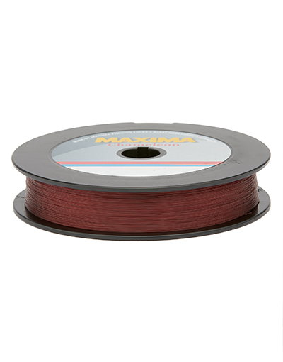

Maxima Chameleon
Diameter chart, reel capacity & backing guide

Maxima Chameleon is a monofilament with what Maxima calls a color-adapting finish. This guide covers spools for filling reels, not the small Leader Wheels sold for tying leaders. Spool sizes without a confirmed diameter and length are left out.
- Construction
- Color-adapting monofilament
- Listed strengths
- 1-60 lb
- Line type
- Monofilament main line
Is Chameleon right for your setup?
Chameleon is worth considering for a mono main line when you prefer stretch and a straightforward reel-to-lure connection. Choose the strength for the presentation and contact with cover, then check the diameter against your reel. For example, the listed 10 lb size is 0.012 inch; that exact dimension determines the fill estimate.
How much Chameleon will fit?
Calculated estimates, not measured fills. Stop at the reel manufacturer's fill level even if some line remains.
Maxima Chameleon diameter chart
Maxima's US diameters and spool lengths. Millimeters are converted from inches. Small Leader Wheels and the 8, 10 and 12 lb Service spools with missing details are not included.
| Strength | Inches | mm | Spools (yd) |
|---|---|---|---|
| 0.003 | 0.0762 | 280 | |
| 0.005 | 0.127 | 110, 280, 3300 | |
| 0.006 | 0.1524 | 110, 280, 3300 | |
| 0.007 | 0.1778 | 110, 280, 660, 3300 | |
| 0.008 | 0.2032 | 280, 3300 | |
| 0.009 | 0.2286 | 110, 250, 660, 3300 | |
| 0.010 | 0.254 | 110, 220, 660 | |
| 0.012 | 0.3048 | 110, 220, 660 | |
| 0.013 | 0.3302 | 110, 220, 660 | |
| 0.015 | 0.381 | 110, 220, 660, 2630 | |
| 0.016 | 0.4064 | 220, 2630 | |
| 0.017 | 0.4318 | 110, 250, 660, 2630 | |
| 0.020 | 0.508 | 110, 250, 660, 2630 | |
| 0.022 | 0.5588 | 250, 660, 2630 | |
| 0.023 | 0.5842 | 250, 2630 | |
| 0.024 | 0.6096 | 250, 660, 2630 | |
| 0.028 | 0.7112 | 660, 2300 | |
| 0.031 | 0.7874 | 660, 2000 |
Choosing your Chameleon strength
The 4-8 lb options run from 0.007 to 0.010 inch. Use a rod and drag setting suited to light line, and inspect the line for wear.
The middle range includes 10, 12, 15 and 18 lb. Both 10 and 12 lb are confirmed in 220-yard One Shot spools; some larger Service spool sizes need clearer specifications.
Chameleon 20-60 lb is progressively thicker mono. Choose these heavier sizes only when your reel, rod and fishing call for them.
This is a specification-based Chameleon setup guide, not a ReelCalc hands-on casting, abrasion or breaking-strength test.
Want a guided recommendation?
Continue in the Setup WizardSame pound test, different diameters
At your selected strength
Loading diameter comparisons...
What changes with another line?
Nearby diameters in the line database
| Line | Strength | Inches | Difference |
|---|---|---|---|
| Loading line database... | |||
Backing, working line & leaders
Check the package length
Use the length shown for your selected strength and spool size. Maxima's 8, 10 and 12 lb Service spools have missing diameter or length details, so those packages are left out.
Leader Wheels are for short leaders
Small Leader Wheels are separate from the spools listed here for filling reels. When Chameleon is only a leader on braid, use the braid's diameter to calculate reel capacity.
Keep enough fresh line
Allow enough Chameleon for your longest casts, fish runs and trimming. Backing can fill the space underneath, with the joining knot below the line you normally cast.
How Much Fits on These Reels?
Estimated full-spool capacity for the Chameleon strength selected above, with no backing. These are calculated examples, not physical tests or recommendations for every pairing.
Loading capacity estimates...
Chameleon questions, answered
What does Chameleon mean?
Maxima uses the name for a line it describes as changing shade with the surrounding water and light.
Is Chameleon simply Ultragreen in another color?
They are separately named Maxima products. Similar listed diameters do not establish identical formulation or handling; use the specifications for the product actually on the spool.
Why are some Chameleon bulk packages missing?
Maxima's listings for the 8, 10 and 12 lb Service spools are missing diameter or spool-length details. Other confirmed spool sizes at those strengths are still included.
How much Chameleon fits my reel?
Use the selected Chameleon diameter with your reel's published capacity. Pound test is a product strength label, not a universal diameter. Stop filling at the reel manufacturer's recommended level.
Does Chameleon require backing?
Backing is optional for a full mainline fill. It can make sense under a shorter fresh working section, but the connection must stay below normal casting depth with enough reserve for runs and retying.
Specifications & sources
Checked September 13, 2026. Maxima's US diameters and spool lengths. Millimeters are converted from inches. Small Leader Wheels and the 8, 10 and 12 lb Service spools with missing details are not included. Spool sizes shown are based on Maxima's published specifications, not live store stock. Reel capacities are estimates.
Calculations use the catalog's listed inch diameters. Published inch and millimeter values may differ slightly because of rounding.
- Official Maxima Chameleon Maxima's US diameters and spool lengths. Millimeters are converted from inches. Small Leader Wheels and the 8, 10 and 12 lb Service spools with missing details are not included.